Long Hoa Chung
...telling impactful stories through data — bridging science and analytics.
About Me
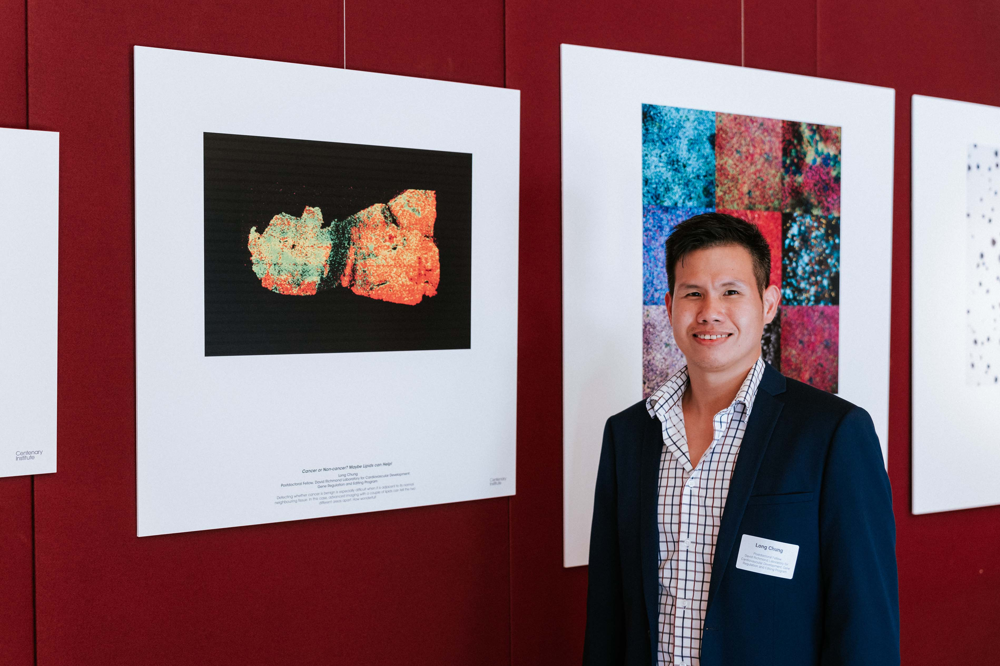
At the NSW Parliament House during Science Week 2023, showcasing my image of human liver tissue captured by mass spectrometry—analysed from over 20,000 data points.
My journey began in biomedical research, advancing lipidomics, proteomics, and mass-spectrometry imaging. I've since expanded into AI and data analytics across finance, retail, and healthcare. Each project reflects my passion for blending science, technology, and creativity to deliver data-driven insights and solve real-world challenges.
Portfolio
I bring a unique blend of expertise spanning biomedical research and modern data analytics. From pioneering DESI-MS imaging (laboratory + instrument-acquired big data) to building AI-driven models for financial, retail, and healthcare datasets, my work demonstrates how rigorous science and data innovation can deliver impact across industries.
Falcon 9 Launch SpaceX – Data Science Capstone Project
End-to-end data science project analysing SpaceX Falcon 9 launches, combining API data, exploratory data analysis, and machine learning to predict landing success.
Solution
Delivered an end-to-end pipeline integrating API ingestion, feature engineering, and machine-learning models to predict first-stage landing success.
Weather Forecast – Global Cities
Interactive global weather dashboard using live APIs to compare multi-day forecasts across major cities with robust data parsing and visualisation.
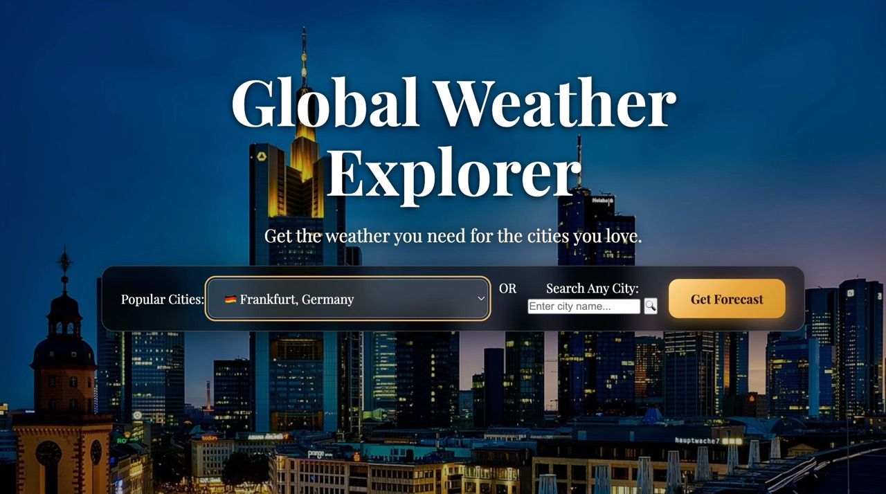
Solution
Built an API-driven system aggregating real-time weather data with user-requested city expansion via an in-app contact form.
Developed machine-learning models to predict loan defaults using financial data, ranking in the top 92% globally in the IBM Data Science challenge.
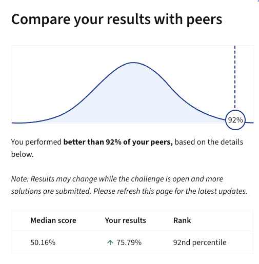
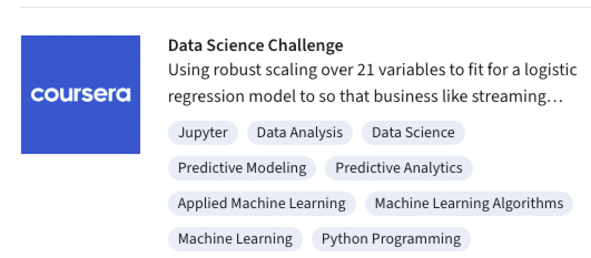
Solution
Applied feature engineering and classification models to identify at-risk borrowers, stress-testing performance across ordinary and extreme cases.
Predicted customer churn for subscription-based services using logistic regression, random forest, and gradient boosting models.
Solution
Compared models using cross-validation and AUC metrics to select robust, business-ready predictors.
Analysed Stack Overflow developer survey data and built IBM Cognos dashboards revealing technology trends and workforce insights.
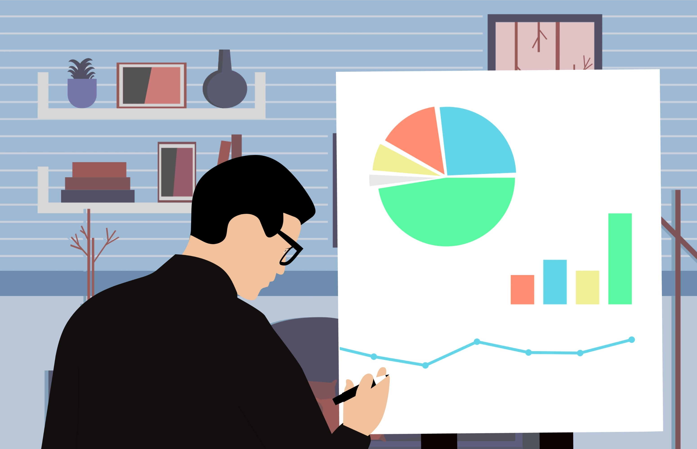
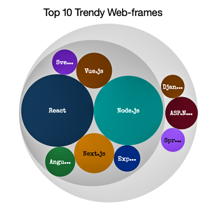
Solution
Delivered interactive dashboards highlighting emerging skills, hiring demand, and strategic workforce implications.
Skills
Data Analytics & Statistics: Turning complex datasets into actionable insights through exploratory data analysis (EDA), statistical reasoning, trend detection, and business-driven storytelling. Experienced in hypothesis testing, feature interpretation, and translating analytical outcomes into clear, decision-support narratives for stakeholders.
Programming & Tools: Proficient across Python, R, and SQL for data wrangling, analysis, and model evaluation. Experienced in building interactive dashboards and reporting layers using IBM Cognos, Looker, and Power BI, enabling transparent data exploration, KPI monitoring, and insight communication across technical and non-technical audiences.
Elastic Stack (Elasticsearch & Kibana): Architected and built Kibana dashboards for real-time monitoring, KPI tracking, and operational reporting, turning raw log and event data into clear, actionable visualisations. Configured Kibana alerting to proactively surface anomalies and threshold breaches, and designed Elasticsearch index mappings and field types to ensure accurate search, efficient querying, and reliable data structure.
Machine Learning & AI: Designing and evaluating predictive and classification models with a strong emphasis on reliability, interpretability, and real-world impact. Skilled in model validation, performance metrics, bias awareness, and aligning ML outputs with operational and business constraints.
AI Training, Prompt Engineering & Human Feedback Systems: Experienced in AI training and evaluation pipelines using rubric-based frameworks, prompt engineering, and human-in-the-loop feedback. Contributed to SFT and RLHF workflows through structured annotation, response evaluation, and failure-mode analysis to improve model quality and alignment.
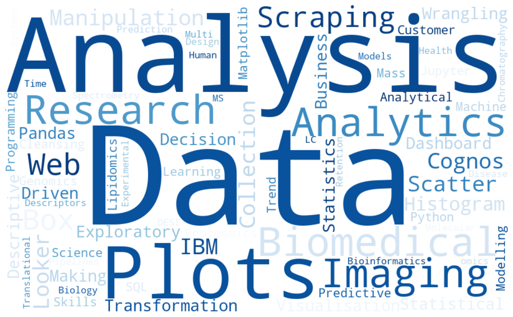
Experience
A journey from scientific discovery to data innovation — bridging research, analytics, and AI leadership.

Research Scientist
PhD scientist with expertise in lipidomics, proteomics, and DESI imaging, publishing novel findings and earning multiple research awards.

Data Scientist
Transitioned into data science and AI, delivering predictive analytics pipelines, business dashboards, and ranking Top-92 in a global Coursera challenge.
AI & Leadership
Current work spans AI model evaluation (Outlier AI), financial/operational analytics, and leadership roles integrating data strategy with ethical AI.
Publications
My research integrates big data in genomics, proteomics, and lipidomics with advanced computational and instrumental approaches. This combination has revealed new disease mechanisms in metabolic disorders, cancer, and neurodegeneration — supporting better diagnostics and healthier ageing. Key contributions include AI-driven proteomics pipelines and real-time lipidomics imaging.
Here is a selection of highlighted papers from my research in lipidomics, proteomics, and imaging mass spectrometry. Please find the full list of publications on my profile.
ReTimeML: a retention time predictor that supports the LC–MS/MS analysis of sphingolipids
Scientific Report, 2024
I collaborated with other researchers to employ build a model that can predict the behaviours of Lipids inside a mass-spec instrument, improving accuracy and detection. The tool helps other researchers quickly reference and identify appropriate methods for their studies.
Read PaperDeep serum lipidomics identifies evaluative and predictive biomarkers for individualized glycemic responses following low-energy diet-induced weight loss: a PREVention of diabetes through lifestyle Intervention and population studies in Europe and around the World (PREVIEW) substudy
Nature Metabolism, 2022
I contributed to a global clinical study by providing analytical guidance and lipidomics methods, connecting omics data with human samples to reveal how lipids influence the dynamics of Type 2 diabetes, its prevention, and management.
Read PaperAblation of sphingosine kinase 2 suppresses fatty liver-associated hepatocellular carcinoma via downregulation of ceramide transfer protein
Journal of Oncogenesis, 2022
I applied advanced data analytics to uncover how changes in liver fat metabolism contribute to non-alcoholic liver cancer and developed a novel imaging approach using digital analysis rather than the traditional microscopy. This method provided clearer visual and quantitative insights directly on real huamn tissues to support early diagnosis and treatment planning.
Read PaperHobbies
🌹 Gardening
Gardening connects me to nature through flowers, fruit trees, and seasonal plants.


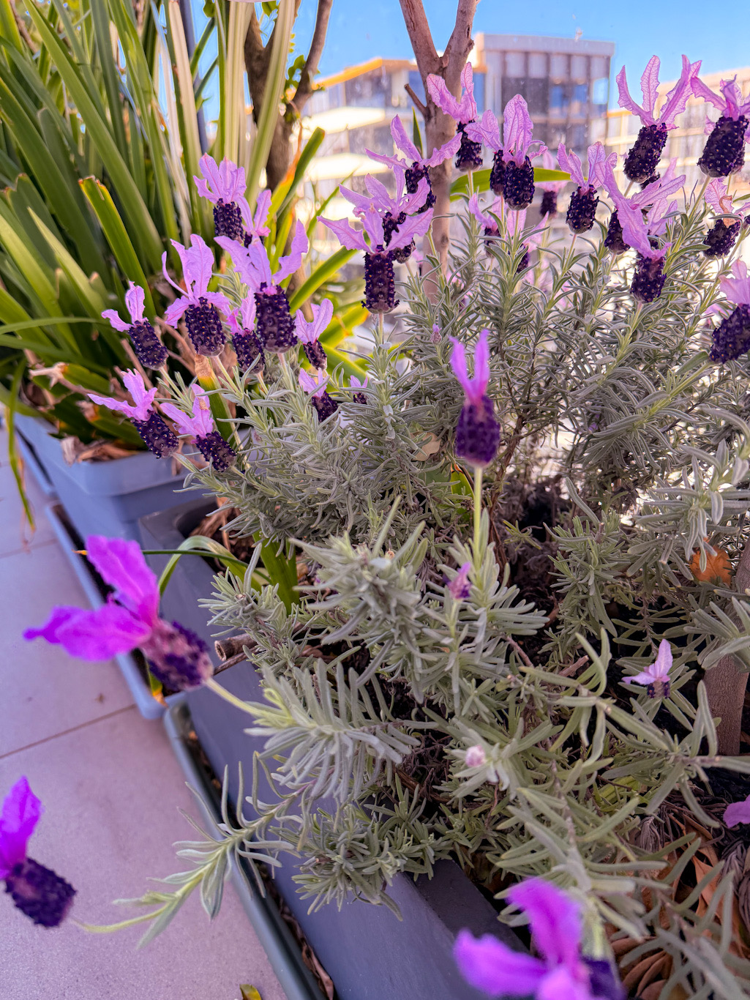

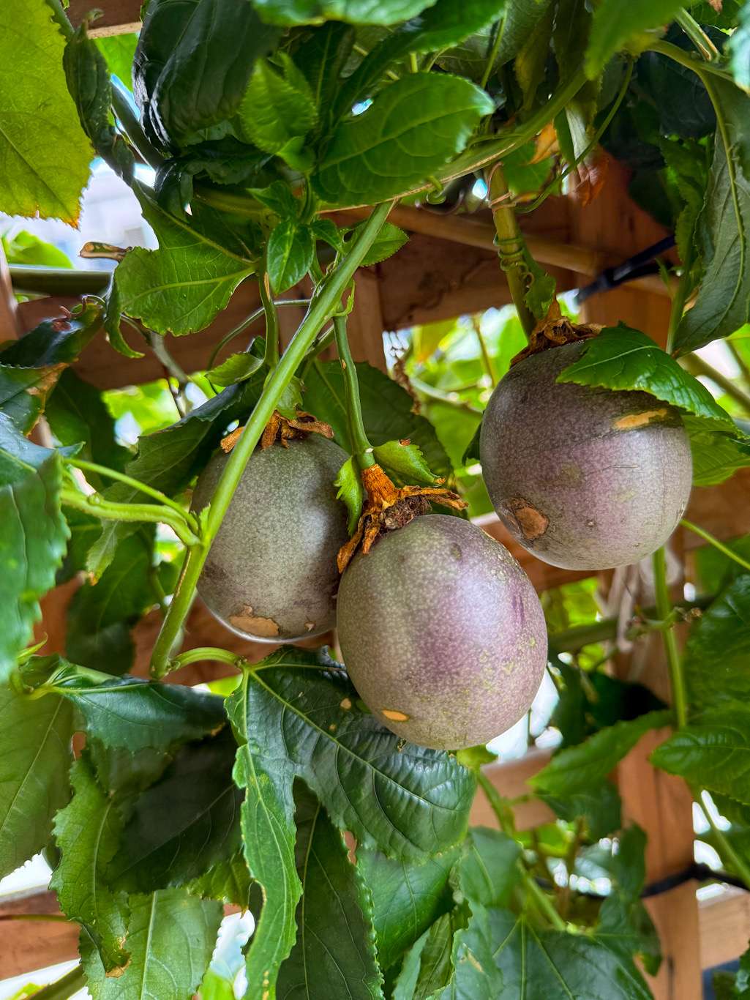
🍳 Cooking
Experimenting in the kitchen is one of my favourite creative outlets.
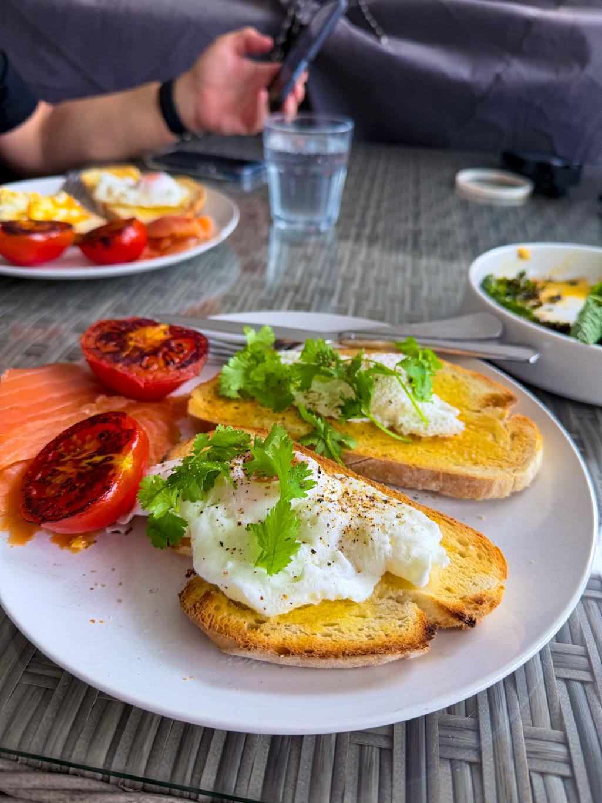


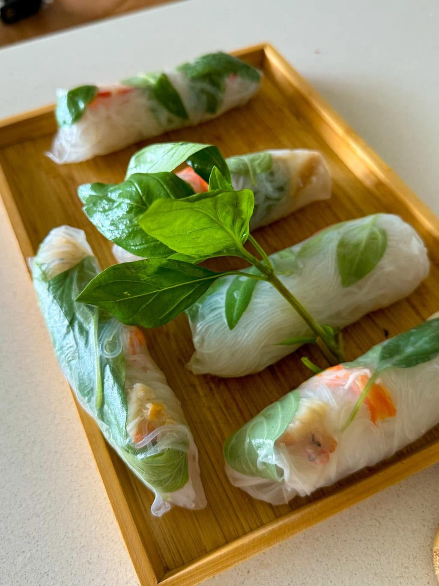
🚗 Travelling
Road trips recharge my energy and inspire fresh perspectives.

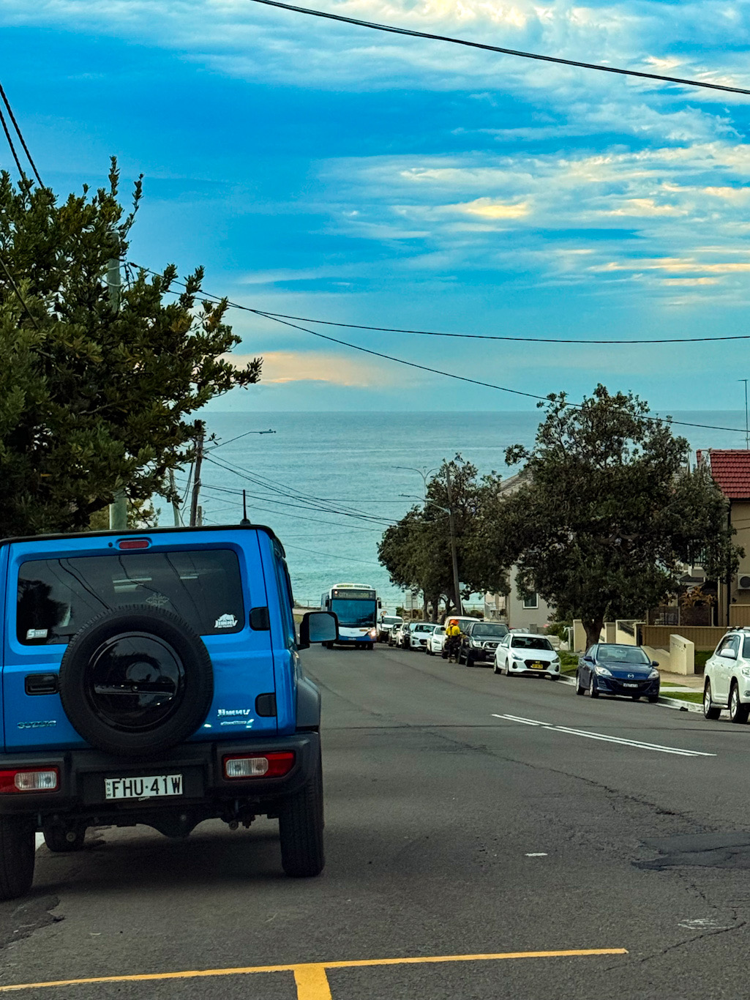
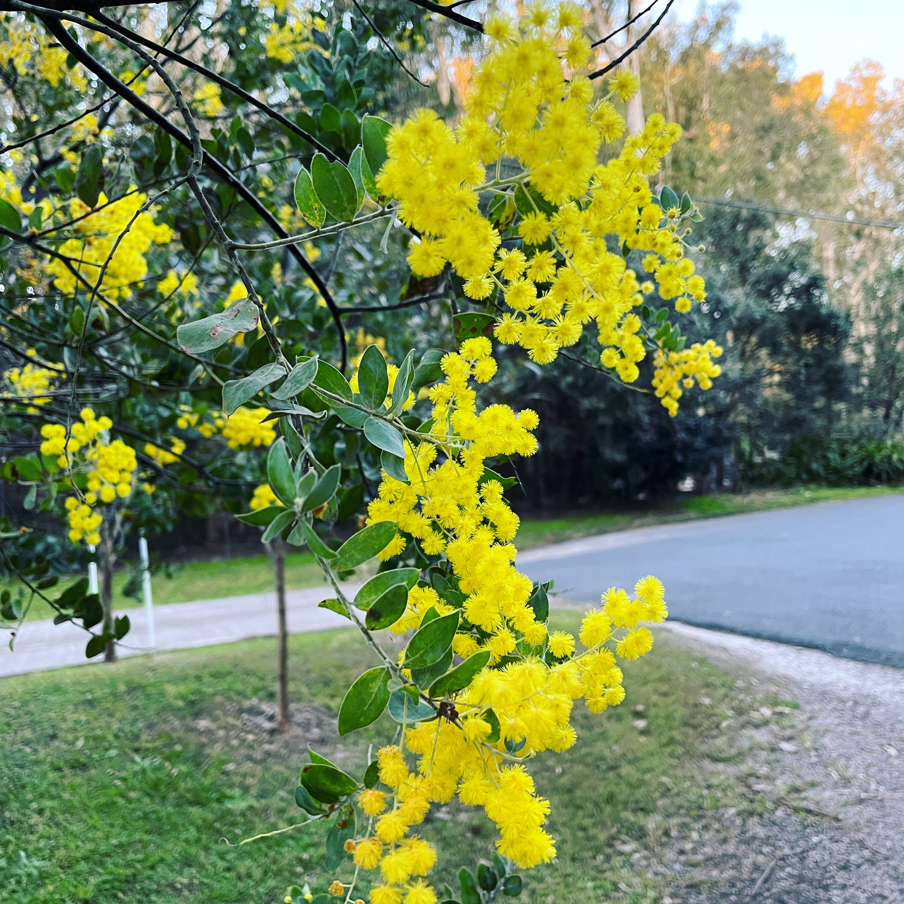
Contact Me
If you'd like to get in touch, please fill out the form below or reach me via social media.